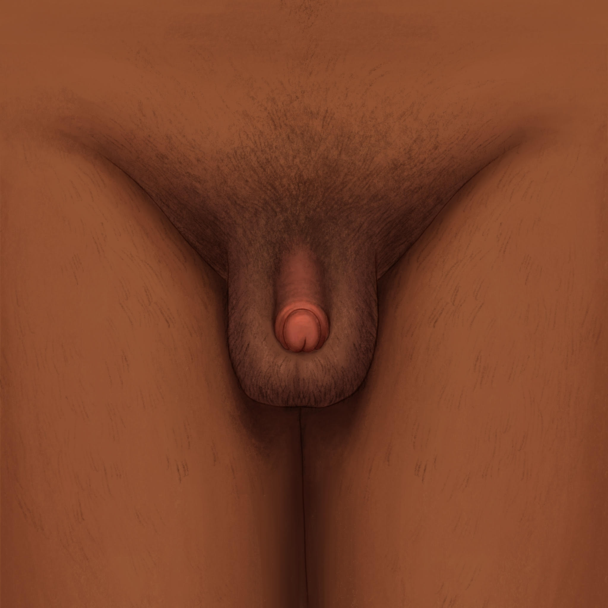
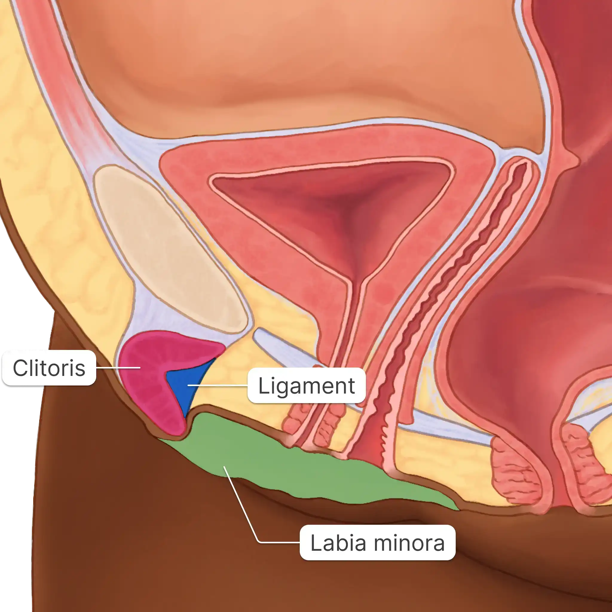
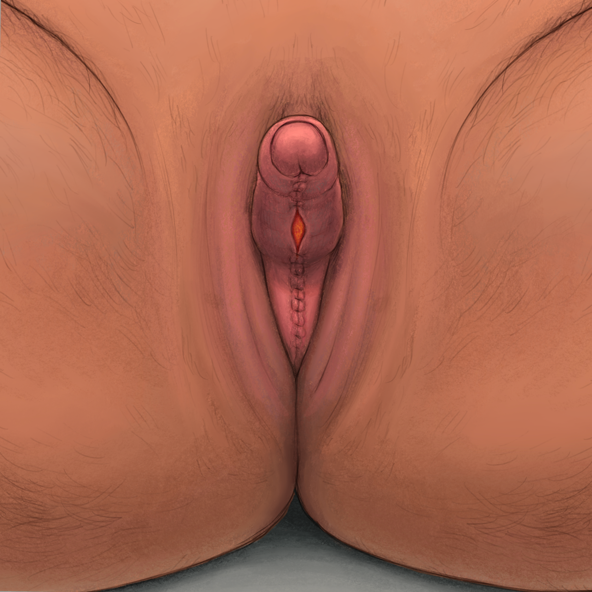
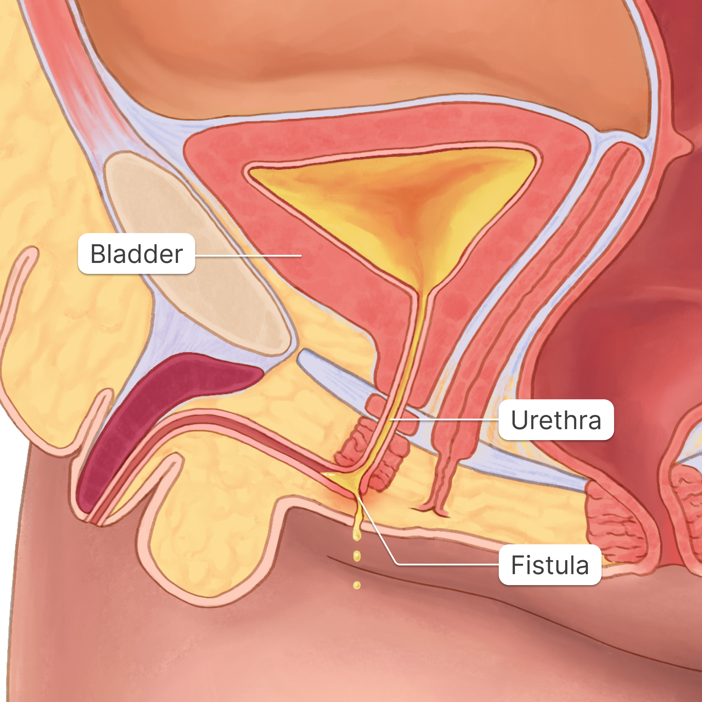
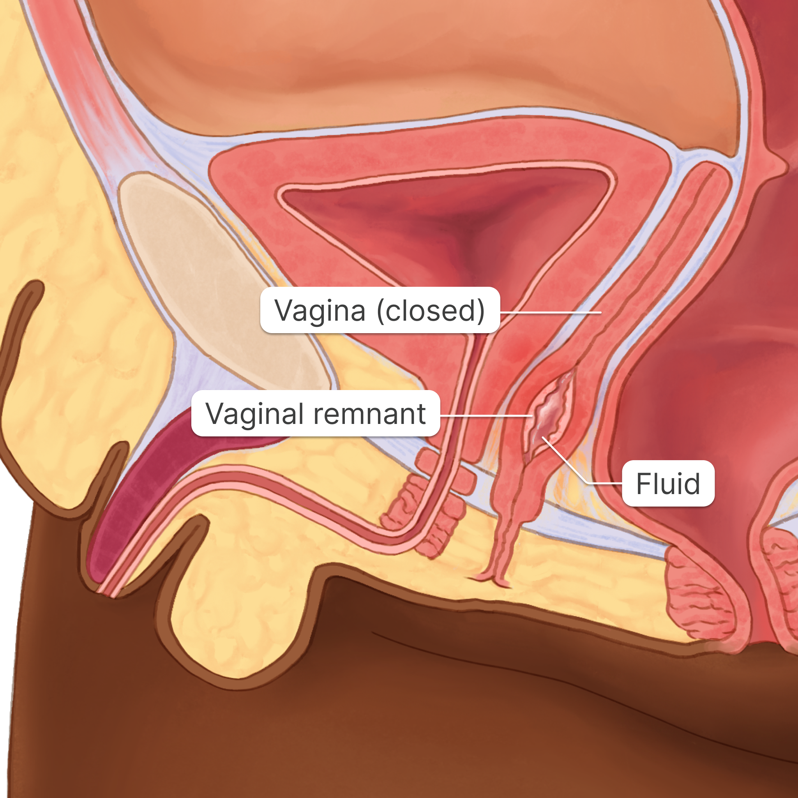
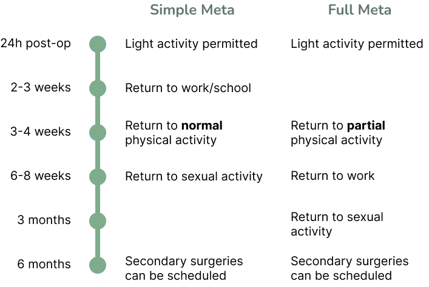
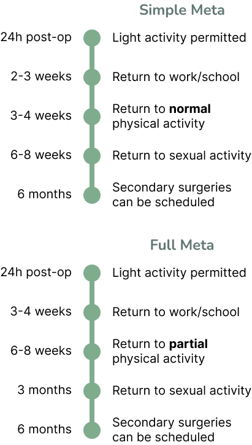

Metoidioplasty Overview
This page is a 12-minute read.
What is Metoidioplasty?

Metoidioplasty is a gender-affirming surgery that creates a penis from your existing genital tissue (clitoris and labia). The word “metoidioplasty” comes from a combination of Greek words:
Meta: towards
Oidion: male genitalia
Plastos: shaping or molding.
The primary goal is to create a penis (5-9 cm long on average) with full sensation using the existing genital tissue. Metoidioplasty is also called “meta” for short.
Meta is different from phalloplasty, another genital surgery that creates a penis. Instead of using the clitoris and labia, phalloplasty uses a graft transferred from another part of your body. Phalloplasty usually results in a larger penis than meta (12-15 cm long on average).
Keep scrolling to learn more about metoidioplasty.
Note: Anatomical terms like “clitoris”, “labia”, and “vagina” are used throughout the site for clarity and consistency. We recognize that not everyone uses these terms for their genitals.
Who is this site for?
This site was created for patients in the meta program at Women’s College Hospital (WCH) in Toronto, so some information will be location-specific. The information on this site is still relevant to anyone who wants to learn more about metoidioplasty.
What are my options?
Here is a look at the anatomy of the pelvis before having meta. Understanding your pre-op anatomy will help you understand what changes during meta.
Notice that the uterus is not shown here, because most people have it removed before meta. The surgery to remove your uterus is called a “hysterectomy”. Read more about hysterectomies on the Related Surgeries page.
You can choose different options for surgery depending on your personal goals. There are 4 procedures available at WCH:
Simple Meta
The ligaments that hold the clitoris close to the body are cut to give it more mobility and make it more visible.
The labia minora is wrapped around the underside of the clitoris to make a penis.


Meta with Vaginectomy (Vnectomy)
The vaginal lining is removed, but the muscular walls around the outside of the canal stay in place.
The vaginal canal and the vaginal opening (front hole) are fully closed. You must have a hysterectomy at least 3 months before having a vaginectomy.


Meta with Urethral Lengthening (UL)
The urethra is the tube that empties your bladder. In urethral lengthening, the labia minora are sewn together to form a tube. This tube extends the urethral opening (pee hole) to the tip of the penis. Depending on your anatomy, UL may allow you to pee while standing.
If you choose this option you will need to have a vaginectomy, which can be done at the same time as the metoidioplasty.


Meta with Scrotoplasty
The scrotum is the bag of skin behind the penis that holds the testicles. The labia majora are used to create the scrotum.
You can choose to have a scrotum with or without testicular implants. If you choose testicular implants, they will be placed 6 months or more after you get meta.


Full Metoidioplasty
“Full meta” is a combination of all of these options. If you choose full meta, all of these procedures will be done during the same surgery.


Try mixing and matching these options on the Build Out Your Surgery page.
There are also other procedures to consider, including monsplasty and testicular implants. Read more about these procedures on the Related Surgeries page.
Goals
Before you choose your surgery, it’s important to know what your goals are. Here are some questions to consider:
Setting Expectations
Meta can help put you at ease with your body and affirm your gender identity. This surgery may improve your body image, sex life, and overall mental health. Most people are happy with their results, but there are still risks to consider. You may have complications, or the results may not match up to your expectations. It’s important to think about the limits of the surgery so you can make the best choice for you.
Some limits include:
-
You may not be satisfied with the size of your penis
-
The size of the penis is usually not large enough to put into a partner’s vagina or anus
-
You may not be able to stand to pee (STP), even if you get urethral lengthening
-
Recovery can be longer and/or more challenging than you expect
-
Your penis may not feel the same way during sex as it used to
The results of your surgery depend on your anatomy before surgery.This means that the size of your clitoris before surgery will determine the size of your penis after surgery. Read more details about Pre-Surgical Anatomy.
If penis size is one of your concerns, you may want to consider phalloplasty. Phalloplasty is another surgery which creates a larger penis than meta (12-15 cm on average). The size of your penis after phalloplasty does not rely on how much bottom growth you’ve had. Bottom growth is when your clitoris grows because of the effects of testosterone therapy. You can find more information about phalloplasty in this resource from the Gender Confirmation Center.
Risks
Like any surgery, metoidioplasty comes with benefits and risks. It’s important to understand what these are when deciding if the surgery is right for you. Read more detailed descriptions of Complications.
General Risks
General risks can happen with any type of meta:
-
Wounds may not heal properly or heal slowly
-
Bruising and bleeding
-
Blood clots
-
Infection
-
Changes in sensation: numbness or pain
-
Sexual dysfunction
-
Mental health decline
-
Regret or unhappiness with the results
-
Reaction to anesthesia (the medications that make you go to sleep and stop you from feeling pain during surgery)

Wound separation on the penis
Urinary Complications
Urinary complications can happen with urethral lengthening:
-
Urine stream dribbles, sprays, or is weak
-
Difficulty or pain while peeing
-
Urethral fistula: unwanted opening in the urethra that leaks urine
-
Urinary stricture: narrowed urethra that makes peeing difficult
-
Urinary tract infection (UTI)
-
Sometimes grafts from the vaginal canal are used in urethral lengthening. The graft may react to the area of the body where it’s used and become infected.
Some of these complications may need medication or another surgery to be fixed. Sometimes, a new hole is made under the scrotum for pee to come out (urethrostomy). In this case, you will no longer be able to stand to pee.

Urethral fistula (unwanted opening)
Vaginal Complications
Vaginal complications can happen if you get a vaginectomy:
-
Very rarely, the bowel or bladder is injured during surgery. This complication may cause infection or internal bleeding.
-
Pain in the pelvis that does not go away.
-
Vaginal remnant: some of the vaginal lining is left behind and a pocket of fluid forms where the vagina used to be. This issue can cause pain and urinary complications. It may require a follow-up surgery to fix.

Vaginal remnant (vaginal tissue left behind)
Recovery
Recovery time differs for everyone. It depends on which surgery you had, your health before surgery, and if you have complications after surgery. These are some of the most important milestones in recovery, but keep in mind that these estimates are averages.




You can learn more about the recovery process after meta on the Recovery page.
| |
Simple Meta |
Full Meta |
Phallo |
|
|---|---|---|---|---|
Appearance |
||||
| Length | +2-4 cm | +2-4cm | +12-14cm | |
| Girth | + (depends on labia minora) | + (depends on labia minora) | ++ | |
| Scrotum | Optional | Optional | Optional | |
| Vaginal canal | Open | Closed | Closed | |
| Visible bulge (outside clothing) | - | - | + | |
Function |
||||
| Stand to pee | - | + | + | |
| Erections | + | + | Possible with implant | |
| Erogenous (natural) sensation | + | + | Present in clitoris. Phallus may develop sensation over months to years. | |
| Insertive sex (penetrating) | - | - | Possible with implant | |
| Receptive sex (being penetrated) | + | - | - | |
Risks |
||||
| Standard surgical risks | Infection, bleeding, scarring, reaction to anesthesia, decreased sensation, dissatisfaction with results | |||
| Urinary complications | - | + | ++ | |
| Numbness | Possible but unlikely | Possible but unlikely | More likely than meta | |
| Scarring | Minimal | Minimal | Scars at donor sites and on genitals | |
Recovery |
||||
| Timeline | 4-6 weeks | 8-12 weeks | 3-4 months | |
| Catheter | - | + | + | |
| Possible costs | Missing work, travel, accomodations | |||
| Number of surgeries | 1 | 1-2 | 2-3 | |
For a more in-depth comparison of meta options, see the Build-Out-Your-Surgery Page.
Surgery at WCH
Metoidioplasty is covered by the Ontario Health Insurance Plan (OHIP) for residents of Ontario. To get meta at the WCH Transition-Related Surgery (TRS) Program, you first need approved funding through OHIP, UHIP, or an alternative federal program. You can learn how to start the process of getting surgery on the Government of Ontario page.
The process of getting approval for genital surgery is similar to top surgery, with a few extra steps:
-
Book two surgery planning visits with a care provider. You can have these visits with a variety of different providers, including:
- The doctor who prescribes your hormones (ie. primary care provider or endocrinologist)
- A psychiatrist
- Through a program offering gender care services
- A registered social worker
- A nurse practitioner
-
After these visits, your care provider will submit a request for OHIP funding.
-
If the request is approved, your provider will send a referral to the clinic or hospital where you want to get surgery.
-
If the referral is accepted, the surgical team will contact you to schedule a consultation.
Women’s College Hospital is an ambulatory center, which means it does not have the same resources that a larger hospital does. There are actually very few patients who stay overnight in the hospital. This may limit who can have surgery at WCH. If the TRS team is concerned that you might not be fit for surgery at WCH, they will contact your primary care provider (PCP) before your first or second consultation.
The TRS team at WCH is there to support you through your metoidioplasty journey. The TRS team will include a doctor and nurse and possibly a physiotherapist or psychiatrist. The TRS team will help you in the many different ways:
- Discuss your goals, surgical and non-surgical options, risks, benefits, and health considerations with you.
- Help find out if you meet the criteria for surgery.
- Let your PCP know if you need to see any specialist doctors.
- Ensure that you are informed about and ready for surgery.